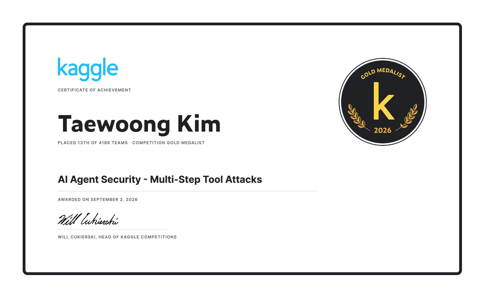
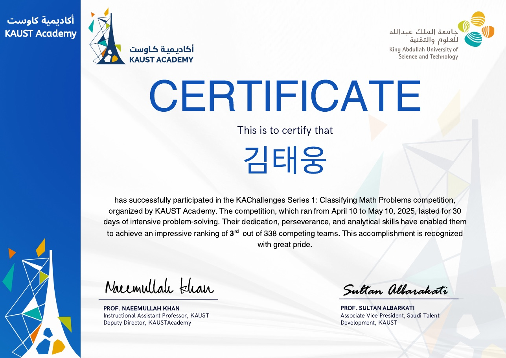
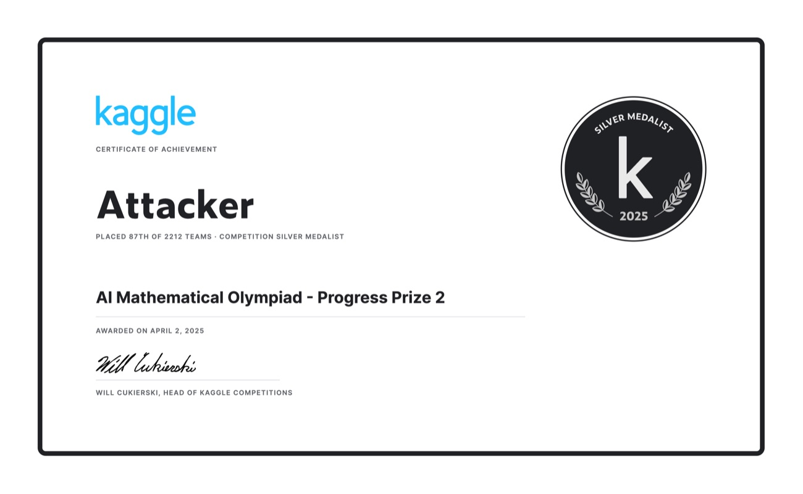

요약
- 병원 폐쇄망 GPU 서버에 의료 LLM 배포, 동시접속 100명 이상 서빙
- 100B+ 오픈 가중치 모델 파인튜닝부터 양자화, vLLM 서빙까지 전 과정 수행
- QR 영수증 상품권 서비스를 1인으로 개발해 2026년 상용 출시, 운영 중
- Kaggle 상위 0.2%: AI Agent Security 금메달(4,186팀 중 13위), 수학문제 분류 3위, AIMO Progress Prize 2 은메달, ARC Prize 2024 동메달
경력
퍼즐에이아이 · AI / NLP 연구원
의무기록 생성용 의료 LLM의 학습, 양자화, 병원 내부 배포 담당
- 병원 폐쇄망 GPU 서버에 LLM 배포, 동시접속 100명 이상 이중화 구성
- 100B+ 오픈 가중치 LLM 파인튜닝(LoRA, DPO/GRPO), 멀티 GPU 분산학습
- 공개 레시피가 없던 모델군의 AWQ 양자화 레시피를 직접 만들어 추론 속도 약 2.5배 향상
- 팀 LLM 서빙 스택을 vLLM으로 전환·정착, 문법 제약 디코딩으로 JSON 출력 안정화
- 진료문서 장문 요약 백엔드 개발, 임베딩·리랭커 교체로 검색 품질 개선
- 병원 실기록 기반 파인튜닝 파이프라인 구축, 병원 현장 시연
- 경량 LLM 임상 의사결정 지원(CDSS) (2023.10 ~ 2024.12): 학습데이터 생성·라벨링, 오픈 LLM 파인튜닝, 온프레미스 배포
- 정밀의료 R&D (2020.11 ~ 2023.02, 대학병원 공동연구): 혈액암 변이 데이터 수집·전처리·분석·모델링
- 초기 (2019.11 ~ 2020): 한국어 의료 NLP, 증상 추출·의료 텍스트 분류
PythonOpen-weight LLMsLoRA · DPO/GRPOGPTQ · AWQ · W4A16vLLMFastAPIOn-prem
프로젝트
QR 영수증 상품권 · 개인 사업
가맹점 상품권 환급 웹 서비스. 고객이 매장 QR로 영수증 사진을 올리면 금액·영수증 번호를 읽어 환급 여부를 판정하고, 발급 기록과 중복 청구 차단, 관리자 화면까지 처리
- 2026년 상용 출시, 참여 가맹점에서 실제 운영 중
- 기획·개발·배포·운영 1인 담당 (GitHub Actions CI, AWS)
Next.jsTypeScriptPostgreSQLAWSDocker
뷰티·헬스 AI 제품
뷰티·헬스 AI 제품의 AI 개발 리드. 실시간 음성 어시스턴트, 두피·피부 진단, 온디바이스 숏폼 생성 기능 출시
- 실시간 음성 어시스턴트: 실시간 STT·번역, 발화 종료 감지 튜닝
- 두피 진단: 공개 벤치마크 재현 후 macro-F1 0.744 달성 (기존 0.689)
- 얼굴 피부 진단 8개 항목: 항목별 등급 모델, 배포 MAE 약 0.49, ±1등급 이내 약 94%
- 학습·추론 전처리를 맞춰 배포 정확도 개선, 온디바이스 모델 8개 출시
- 온디바이스 숏폼 자동 생성·렌더링 (자동 편집, 배경음악, 진행 UI)
PyTorchon-devicereal-time voiceffmpeg
대화형 AI 서비스 (사이드 프로젝트)
멀티모달 대화형 AI 서비스의 AI/ML 엔지니어. 감정분석, 음성·영상 생성, NLP 기능 개발·출시
- 감정 분류기: 약 1,500건 직접 라벨링, 7개 클래스, CPU 추론 0.06초
- 멀티모달: TTS·음성 클로닝, 토킹헤드 영상, 이미지 캡셔닝, 음성 향상, 이미지 생성 API 연동
- NLP: 임베딩 유사도 기반 반복 응답 방지, 텍스트 모더레이션, 문장 분리
- 캐릭터 생성 프롬프트 설계, 클로즈드 베타 100명 데이터 분석, 출시 QA
NLPmulti-modal AIprompt engineeringdata labelingQA
수상 · 컴페티션 (개인)
Kaggle
상위 0.2% · 411 / 212,647- AI Agent Security (OpenAI) · 금메달, 4,186팀 중 13위 (2026.09). LLM 에이전트 레드팀 벤치마크. 공개 리더보드 상위 공격 유형이 최종 채점에서 무효화될 가능성에 대비해 서로 다른 공격 전략 2개로 제출을 나눔. 공개 약 117위에서 최종 13위
- 수학문제 분류 (KAUST Academy) · 3위 (2025.05). 생성형 분류를 제약 디코딩으로 바꿔 라벨 토큰만 출력하게 해 형식 오류 제거. 3위 솔루션 라이트업
- AIMO Progress Prize 2 · 은메달 (2025.03). 추론 모델 파인튜닝·양자화, 토큰 예산 안에서 다중 샘플 다수결
- ARC Prize 2024 · 동메달 (2024.11). 처음 보는 과제의 추상 추론
Zindi · FAO/ITU 위성 양식장 탐지
13위- 학습·테스트 데이터 차이가 커서 테스트타임 자가학습 적용, 공개 점수 0.916 → 0.941. 최종 제출은 점수 변동이 작은 쪽을 골라 비공개 순위 변동에 대응



기술 스택
언어Python, TypeScript
LLM / GenAI파인튜닝(SFT·LoRA), RL(DPO/GRPO), 양자화(GPTQ/AWQ/W4A16), 구조화 출력, RAG·검색(임베딩·리랭킹)
NLP / CV / 데이터한국어 의료 텍스트 처리, PyTorch 이미지 모델 학습·논문 재현, pandas 분석, 데이터 라벨링
서빙 / 인프라vLLM, FastAPI, Docker, Kubernetes, 온프레미스 GPU 서빙, AWS, GitHub Actions, W&B
개발 방식AI 코딩 에이전트(Claude, Codex)로 구현, 설계·리뷰·검증은 직접
커뮤니티
learnup 스터디 운영자 · 소모임 앱
- 50명 이상 모임을 1년 넘게 운영. 평일 저녁 오프라인 모임의 일정·장소·진행 담당
링크
Kagglekaggle.com/aleaiest
Hugging Facehuggingface.co/qwertist